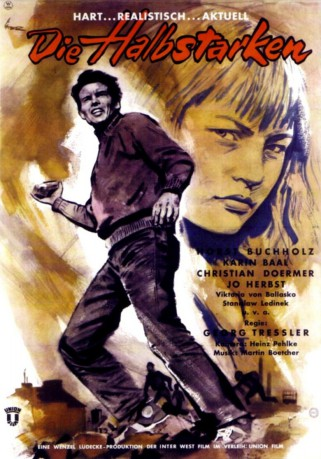

#7875 Die Halbstarken
 
 IMDB-Wertung: 6.6 / 10
IMDB-Wertung: 6.6 / 10  Metascore: 0
Metascore: 0 
Der 19-jährige Freddy Borchert ist der Anführer einer Berliner Jugendgang. Er ist von zu Hause abgehauen, weil er seinen Vater, einen gewissenhaften Beamten, der seine Familie tyrannisiert, nicht mehr ertragen kann. Vater Borchert muss aufgrund einer Bürgschaft für seinen Bankrott gegangenen Schwager eine hohe Schuld abzahlen. Jan, Freddys jüngerer und etwas sanfterer Bruder, gewinnt durch dessen Angebereien den Eindruck, dass Freddy ein gemachter Mann ist. Er bittet ihn, ihm die 3.000 Mark zu geben, mit denen der Vater seine Schulden loswerden könnte. Seiner Mutter zuliebe verspricht Freddy, das Geld zu beschaffen, indem er ein "großes Ding" dreht. Die Bande überfällt ein Postauto und bringt die Beute in einem "geliehenen" Buick zu einem Bootshaus vor der Stadt. Doch in den geraubten Säcken sind nur wertlose Postanweisungen, und Freddys Ansehen innerhalb der Gang und bei seiner Freundin Sissy erreicht einen Nullpunkt...
Jahr: 1956
Dauer: 94 Minuten
FSK: 16
Land: West-Deutschland Studio: Union-Film GmbHTonspuren:
Untertitel:
Auflösung: 1080p (1792x1080) Größe: 5253 MB
Genre: Thriller, Drama, Krimi
Regisseur: Georg Tressler
Drehbuch: Will Tremper
Soundtrack: Martin Böttcher
Darsteller:
 Horst Buchholz als Freddy Borchert
Horst Buchholz als Freddy Borchert- Karin Baal als Sissy Bohl
- Christian Doermer als Jan Borchert
- Viktoria von Ballasko als Mutter Borchert
- Jo Herbst als Günther
- Stanislav Ledinek als Antonio Garezzo
- Mario Ahrens als Mario
- Manfred Hoffmann als Klaus
- Hans-Joachim Ketzlin als Willi
- Kalle Gaffkus als Kudde
- Wolfgang Heyer als Woelfi
- Paul Wagner als Vater Borchert
- Eduard Wandrey als Pepe Garezzo
- Friedrich Joloff als Theo Krüger
- Ruth Müller als Rita
- Egon Vogel als Prillinger
- Gudrun Krüger als Gabriele Klein
- Ingrid Kirsch als
- Oskar Lindner als
- Marion Lebens als
- Editha Horn als
- Heinz Palm als
- Paul Bladschun als
- Fritz Daninger als
- Elka Haedrich als
- Benno Hoffmann als Postfahrer
- Heinz Holl als
- Margit Moos als
- Hans Putz als
- Anneliese Würtz als
- Brigitte Grothum als Sissy Bohl (uncredited)
 Ernst Jacobi als Klaus (uncredited)
Ernst Jacobi als Klaus (uncredited)- Lutz Moik als Kudde (uncredited)
- Gerd Vespermann als Willi (uncredited)
- Herbert Weissbach als Prillinger (uncredited)
Datei: X:\1950-1959\Halbstarken, Die (1956, FSK16, 1792x1080).mkv seit 02.01.2018
Festplatte: HD 1900-1970
 Es gibt insgesamt 141 Filme in der Gruppe '1950-1959'
Es gibt insgesamt 141 Filme in der Gruppe '1950-1959'